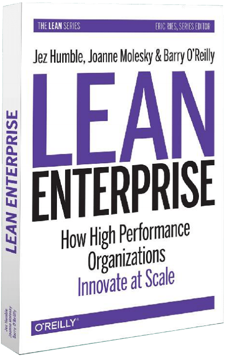

This is DevOps – everything else is a lie!
Booster 14.03.2018

A brief history about
how DevOps got its name

10 Deploys per Day: Dev and Ops Cooperation at Flickr.
#devops
What is DevOps?
Definition
…it is getting developers and operations folk to work closely
together to benefit the business.

We have no Ops!

NoOps != No Operations
Making s**t work in production (2007)

Developers vs. Operators
Engineers/Technologists
DevOps ≈ Continuous Delivery (2010)

...a software development discipline where you build software in such a way that the software can be released to production at any time.
Continuous delivery is about putting the release schedule in the hands of the business, not in the hands of IT.
Continuous Delivery ♥ DevOps
DevOps ≈ Lean (2013)
...something called “DevOps.” Maybe everyone ... is a form of DevOps, but I suspect it’s something much more than that. It’s Product Management, Development, IT Operations, and even Information Security all working together and supporting one another.
Lean ♥ DevOps
DevOps ≈ Lean in the Enterprise (2014)
...true agility means that teams are constantly working to evolve their processes to deal with the particular obstacles they are facing at any given time.
The Enterprise ♥ DevOps
Courageous Executives (2017)
...willing to challenge everything: the status quo, internal siloes, and immovable strategies
... erasing the lines between business and technology
... hiring, empowering, and growing multidisciplinary, future-ready employees
... investing in platforms that allow their businesses to get ideas to market in weeks, not months
Courageous Executives ♥ DevOps
DevOps fatigue
Even Agile fatigue
Cloud baby!
Let the cloud vendor cover your *aaS
- Applications
- Data
- Runtime
- OS
- Virtualization
- Storage
- Servers
- Network
On premises
- Applications
- Data
- Runtime
- OS
- Virtualization
- Servers
- Storage
- Network
IaaS (host)
- Applications
- Data
- Runtime
- OS
- Virtualization
- Servers
- Storage
- Network
PaaS (build)
- Applications
- Data
- Runtime
- Os
- Virtualization
- Servers
- Storage
- Network
SaaS (consume)
This is DevOps - everything else is a lie!
Thank you!
Slides:
http://steinim.github.io/slides/this-is-devops-booster/